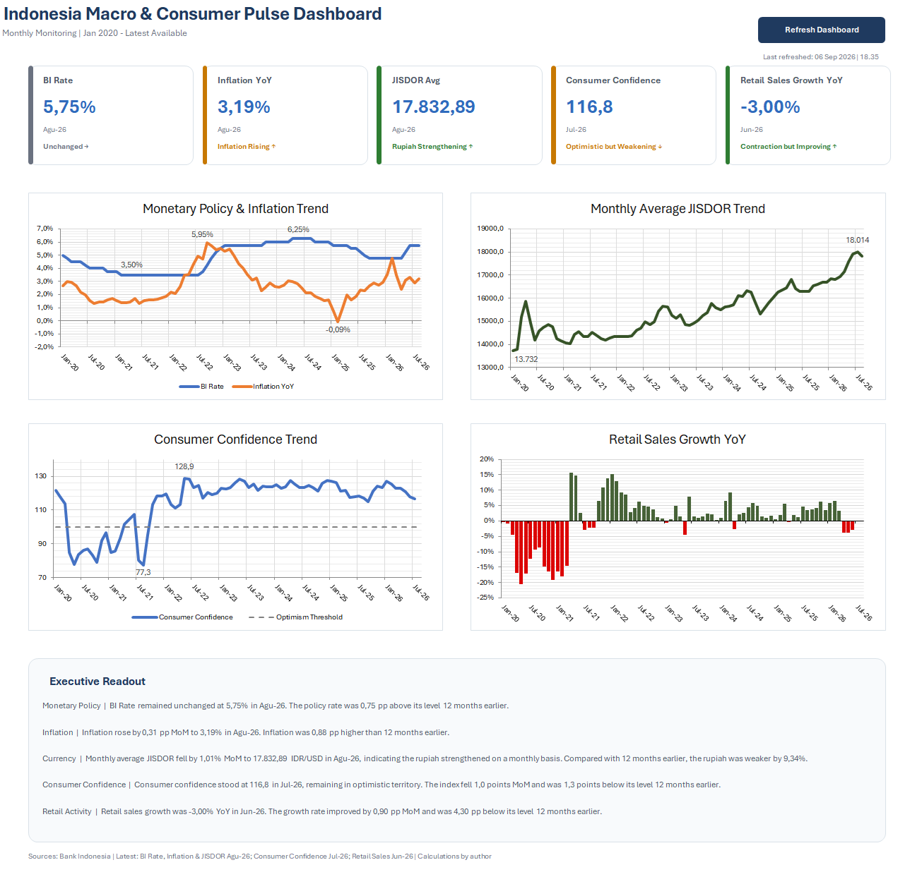

Monetary Policy
What is the current BI Rate stance, and how has it changed?
DATA ANALYSIS • EXCEL • POWER QUERY • VBA
An end-to-end analytical project that consolidates Indonesian macroeconomic and consumer indicators into a refreshable monthly monitoring dashboard.

01 / Overview
Indonesian economic indicators are released through different datasets, frequencies, and publication schedules. Monitoring them together requires more than simply placing values in one spreadsheet.
I designed this project to simulate a recurring analytical workflow for a strategy or business analytics team that needs a concise view of monetary conditions, inflation, exchange-rate movements, consumer sentiment, and retail activity.
The result is a structured pipeline from raw source files to cleaned monthly datasets, analytical metrics, management commentary, and an automated Excel dashboard.
02 / Business Questions
What is the current BI Rate stance, and how has it changed?
Are price pressures increasing or easing?
Is the rupiah strengthening or weakening against the US dollar?
Are consumers still optimistic, and is confidence improving?
Is retail activity expanding or contracting?
03 / Data
| Indicator | Producer | Raw Frequency | Monthly Treatment |
|---|---|---|---|
| BI Rate | Bank Indonesia | Policy decisions | Latest decision in each month |
| Inflation YoY | Bank Indonesia | Monthly | Standardized percentage |
| JISDOR | Bank Indonesia | Daily | Monthly average |
| Consumer Confidence | Bank Indonesia | Monthly | Published index value |
| Retail Sales Growth YoY | Bank Indonesia | Monthly | Published YoY growth |
04 / Workflow
Source files preserved as the original reference.
Cleaning, types, naming, and source-specific transformations.
All indicators merged using a standardized month key.
MoM changes, 12-month comparison, and interpretation logic.
VBA-generated KPI cards, charts, and executive readout.
05 / Analytical Decisions
BI RATE
When multiple policy decisions occurred within one month, the last decision was retained to represent the month-end policy stance.
JISDOR
Partial September 2026 observations were excluded so the monthly figure would not mix complete and incomplete periods.
PUBLICATION LAG
IKK and retail data were not forward-filled. Each KPI retains its own latest published period.
INTERPRETATION
For example, positive JISDOR MoM means USD/IDR increased, which is interpreted as rupiah weakening.
06 / Output
The dashboard combines five KPI cards with trend charts and an executive readout. Each KPI displays the latest available period instead of assuming every indicator has the same publication date.
Retail Sales Growth uses positive and negative bar colors to separate expansion from contraction. Consumer Confidence includes the 100-point optimism threshold, while the JISDOR chart explicitly follows the convention that a higher USD/IDR level represents a weaker rupiah.
VBA is used only as the automation and presentation layer. The underlying cleaning and transformations remain in Power Query so the workflow stays auditable and maintainable.
07 / Quality Assurance
Testing covered source periods, row counts, missing values, publication lags, KPI reconciliation, chart output, refresh execution, dynamic commentary, and persistence of the VBA refresh workflow.
08 / What I Learned
This project reinforced the importance of defining each indicator before visualizing it. A technically correct chart can still be misleading if frequency, unit, publication lag, or direction of interpretation is handled incorrectly.
It also gave me practical experience separating the data pipeline, analytical logic, and presentation layer rather than trying to solve everything in one worksheet.
Project files